A tabletop strategy game — place your units, watch the chaos, survive the campaign.
UnityC#JSONAI State MachinesSolo Dev
Game Trailer
Demonstration Playthrough
Main Menu Demo
Try the game here!
Concept & Inspiration
I wanted to combine the aspects of a tabletop/board game and a strategy game to make something that emulates a mix of both genres designed for desktop/PC play. The idea was essentially having a game loop where the player chooses locations to place their units and pits them against the enemy's set of units for multiple rounds. Strategy is involved, as players must manage the amount of points they have to spend on units (points carry over from round to round) and also consider where to place those units for maximum efficiency.
This project is being developed entirely by myself — handling art, sound, game mechanics, lore, and everything else solo.
Design Goals & Challenges
Goals
Create a game that is easy to understand, fun, and has replayability — intuitive controls and UI with a tutorial, diverse units with visually appealing abilities, and an endless ceiling for interesting unit types and strategies.
Challenges
Animating characters convincingly
Cohesive sound design across all units
AI for various unit types with different behaviors
Cohesive art and unit theming
UI design that doesn't get in the way
Features
Fully narrated tutorial levels
Dynamic player-controllable camera
Full sound system for all units and stages
Standalone executable for quick access
9 unique units to field
25+ minutes of gameplay across 2 maps, 9 fight encounters, and 1 final boss fight
15-wave survival mode
Map hazard system
Experience/progression system with unlockable units
Relic system for replayability (randomized each run)
Hardcore mode (one death = save deleted)
Game saving system
Tools & Technologies
Unity Game Engine
C#
JSON
Development Log
Below is the full dev log chronicling the game's development from initial concept to current state.
Initial Design
Here is my initial idea for the game board — a 4x6 grid split between enemy and player sides.
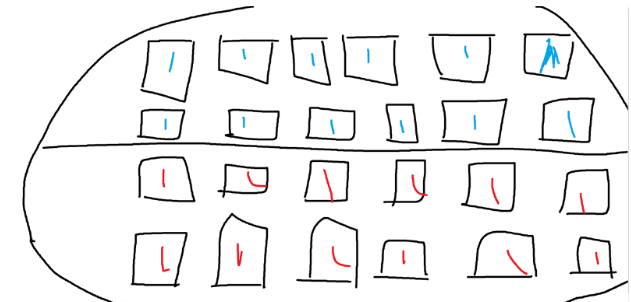
I then planned the UI elements, starting with the game board HUD — health bars with unit portraits — and the unit selection screen.
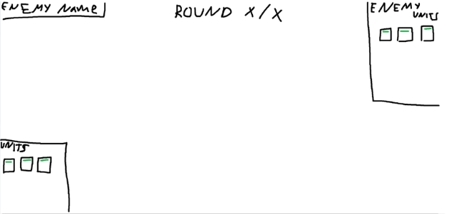
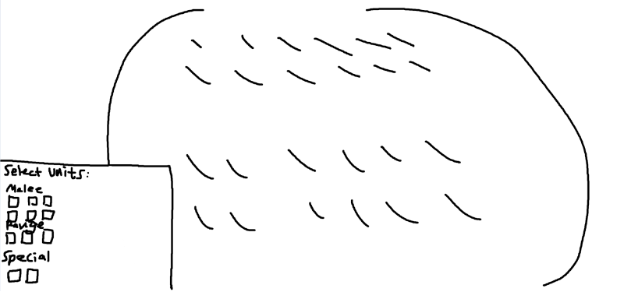
And the campaign screen, which players would always arrive at before or after an encounter:
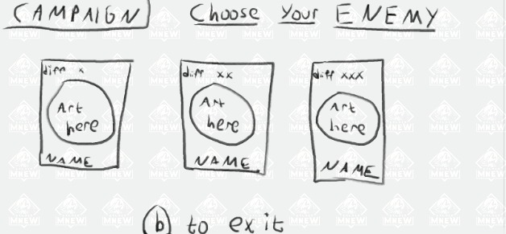
Early Prototyping
Here's the initial game board in Unity — red and blue pegs represent spawn positions. I then added basic UI, selection highlighting (blue = selected, green = hovered, gold = active UI), and a mock menu screen.
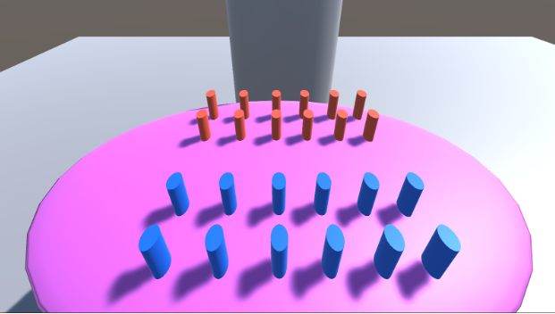
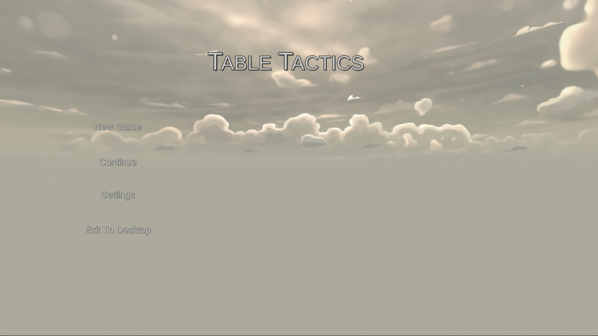
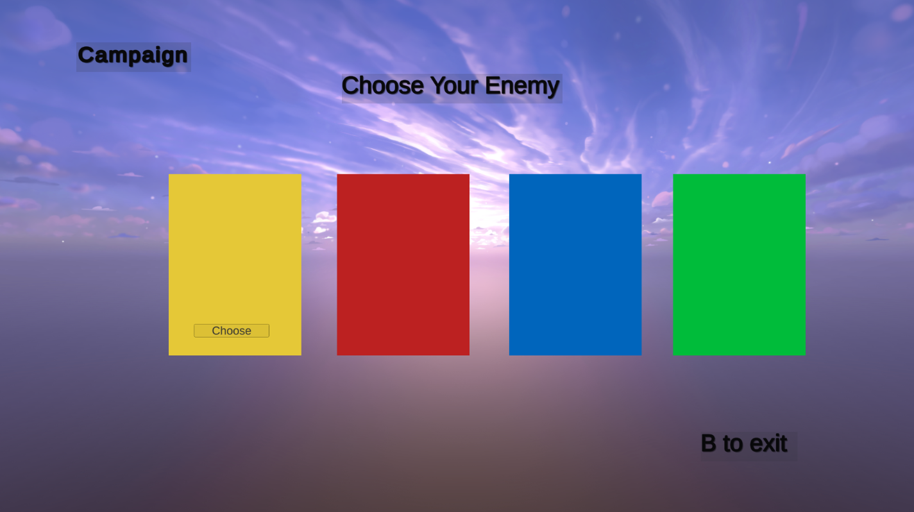
After fixing a bug that let players select multiple spawn spots at once, I implemented unit instantiation at selected positions:
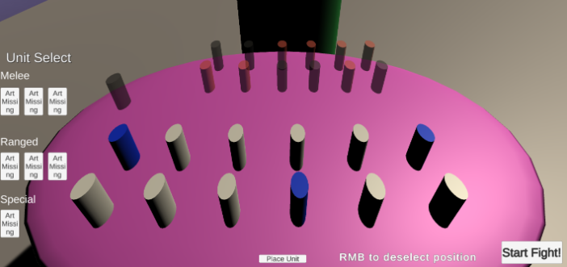
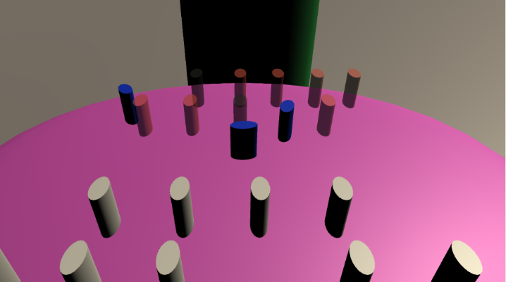
First Unit: The Bunny
My first unit idea: a weak melee bunny that hops around to dodge, super squishy but annoying. The AI decides whether to strafe or move in for an attack, always prioritizing the nearest enemy.
First unit demo
Bunny vs bunny fights
Added texture to the background and tabletop, dramatically improving visual clarity:
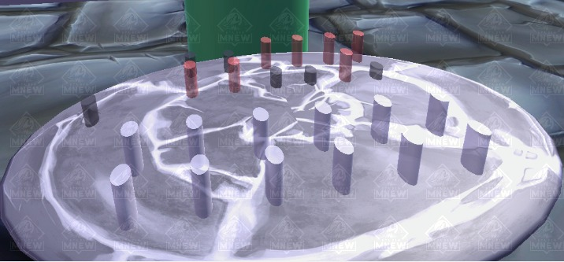
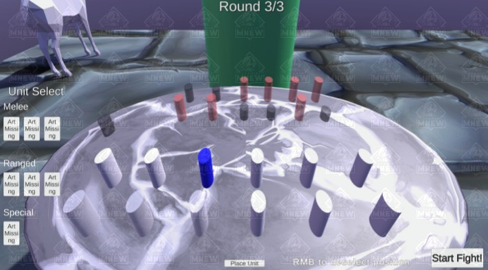
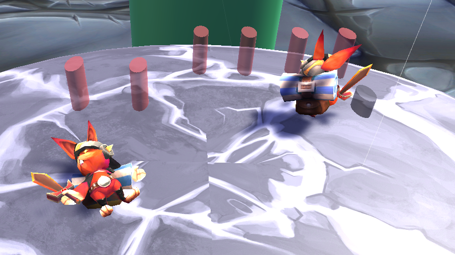
More Units & Environments
Added a slime girl (basic attacks, no strafing) and a harpy (long range, can strafe). Started experimenting with terrain backgrounds:
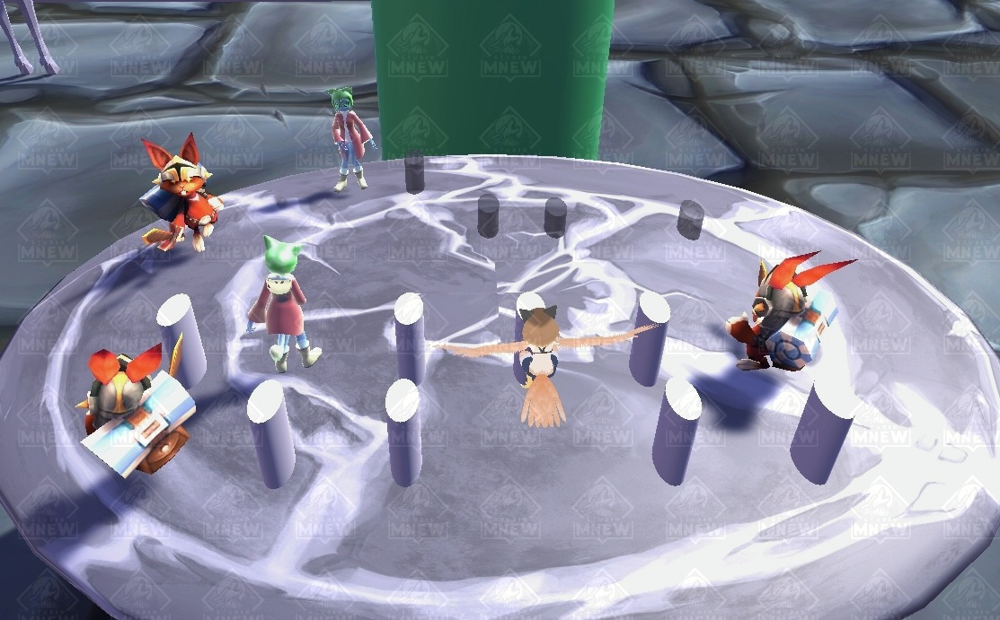
Units fighting
Terrain experiments
Health Bars & Camera
Added health bars, mana bars (earned through combat, triggers abilities), and camera controls — circular movement, zoom, height adjustment:
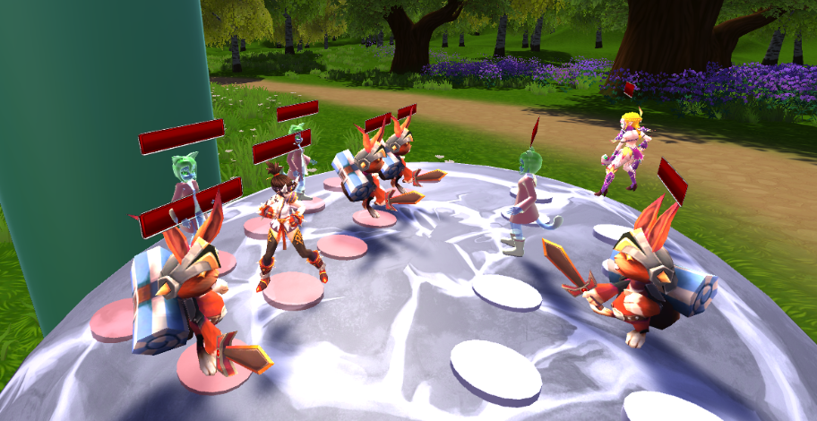
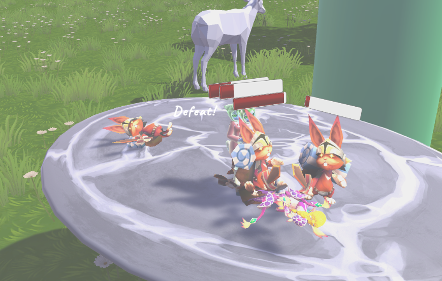
Tutorial Design
Designed a step-by-step tutorial where each step shows a UI prompt that disappears only after the player completes the action:
Update — Jan 26, 2023
Large changes to tutorial, save system, and overall progression. No audio in first two tutorial levels yet (planned narration). All subsequent levels have full audio.
Updates — Feb 2–13, 2023
New enemy unit models — all enemies now visually distinct from friendly units
Fixed save system bugs; player only warned of file deletion if a file exists
Special ability system fully working with animations
Knockback added to giant bear's special ability with low-poly particle effect
Added new Syrian Warrior unit with "RALLY" ultimate (heal, max HP boost, double attack speed)
Added fairy healer unit that only targets and heals teammates
Added archer and enemy bear to the roster
Full audio pass: all allied units have sounds including placement sounds
Camera shake on bear slam (0.5s)
Added spatial audio to all units for immersion
Large post-processing improvements
New unit art with point costs for the UI:
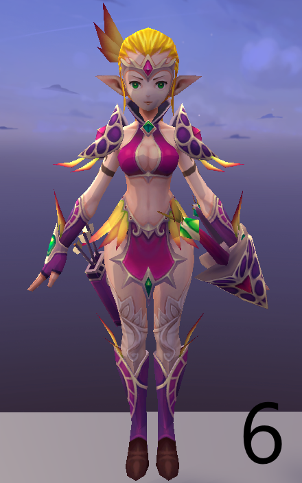
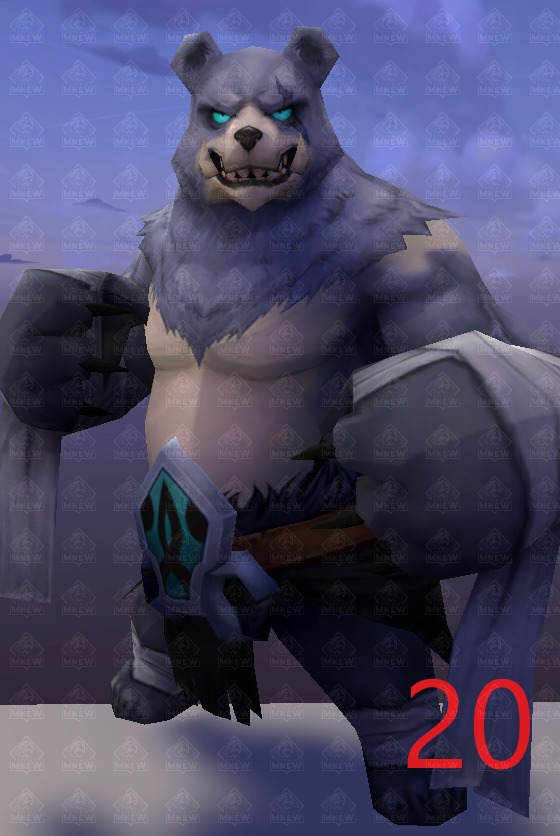
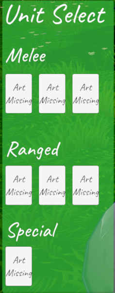
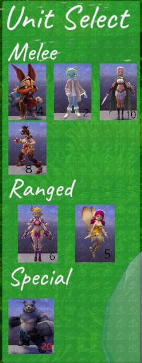
Studio logo (I'm a one-man show, so I kept it light):
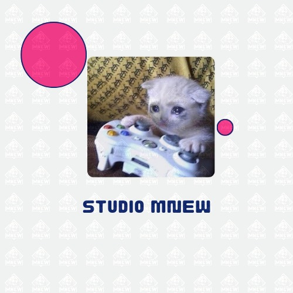
Update — Feb 20, 2023
First playtest build sent to testers:
Updates — Feb 22 – Mar 11, 2023
Fixed major UI bug where unit selection disappeared on click-away
Camera now properly rotates around table center
Added undo button — refunds points and frees board space
Added click feedback sounds to all UI elements
Full experience and progression system with unit unlock rewards at level 5
Relic system added — randomized each playthrough for replayability
Hardcore mode added (can be toggled on/off)
Full game storyline crafted
Design drafts and final implementations:
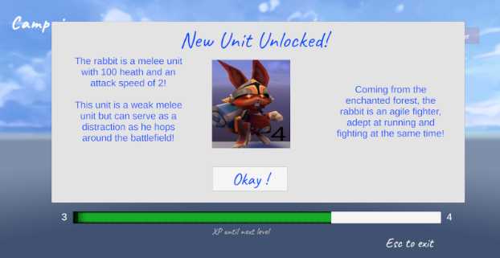
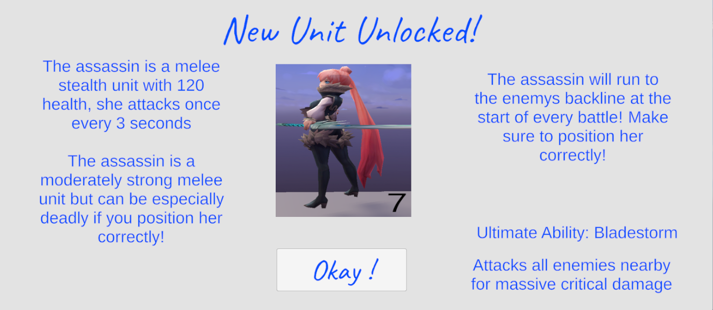
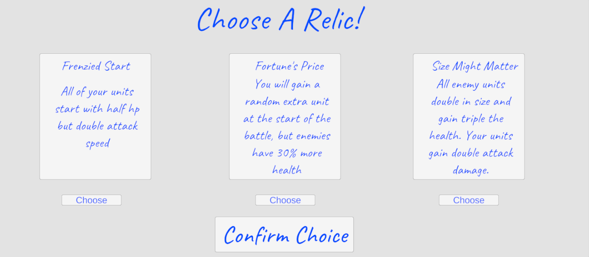
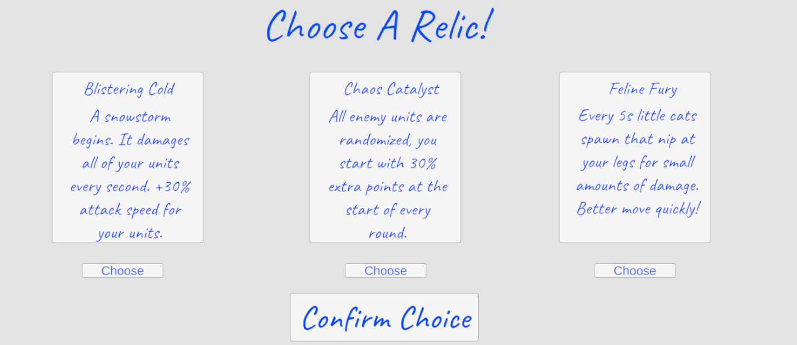
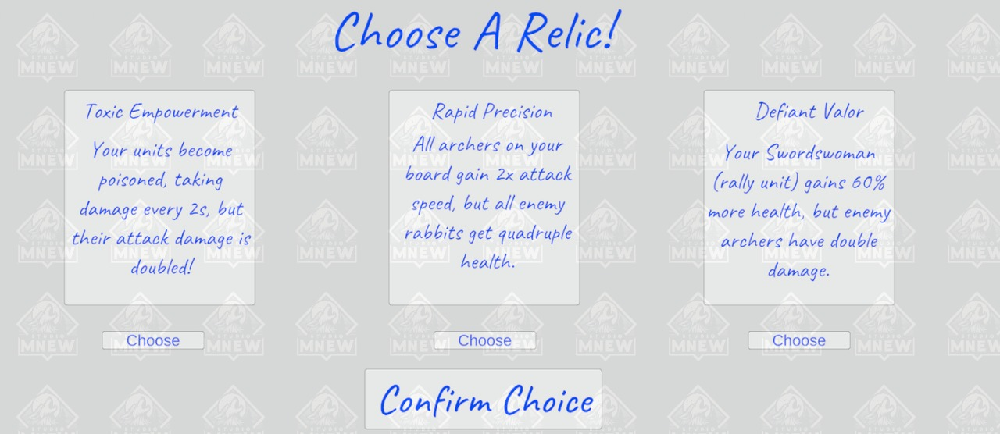
Full Relic List
Frenzied Start — half HP, double attack speed
Shields Up — 30 damage shield for your units, enemies deal 30% more damage
Fortune's Price — random extra unit for you, enemies have 30% more health
Extended Reach — all your units gain slightly increased attack range
Phantom Army — temporary copies of all units on both sides
Chaos Catalyst — all enemy units randomized, you start with 30% extra points
Feline Fury — untargetable cats spawn every 5s and nip at your units
Blistering Cold — snowstorm damages all your units per second, +30% your attack speed
Toxic Empowerment — poison hurts all your units every 2s, but you deal 2x damage
Rapid Precision — archer attack speed doubled, enemy rabbits get 4x health